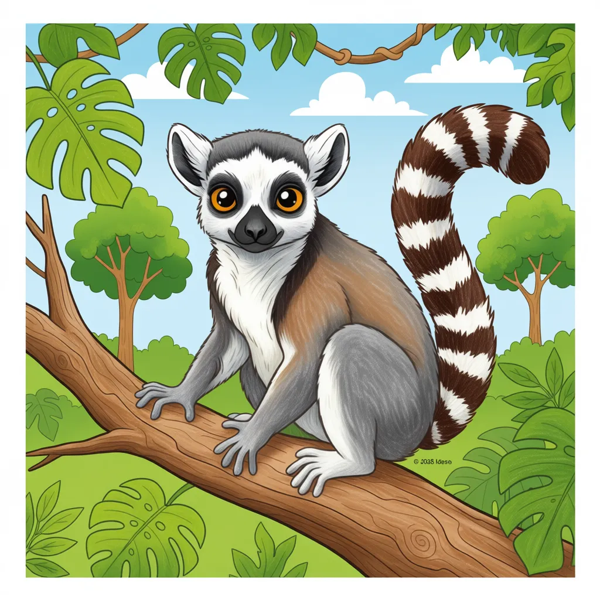

Ring-Tailed Lemur
Lemur catta

Key Characteristics
- "Lemurs are primates (like monkeys) but are only found on the island of Madagascar, nowhere else in the world!
- They are easily recognized by their long, black-and-white striped tail, which they use for balance and communication.
- Lemurs love sunbathing! They sit with their arms spread wide to soak up the morning warmth."
Peculiar Facts (Fun Facts!)
- Lemur groups are led by the females—a rare thing in the primate world!
- They have 'stink fights' by rubbing their tail on scent glands and waving their smelly tails at rivals.
- Lemurs use their long tails to help them jump long distances between branches.